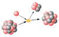

isotope

Definition: Isotopes are distinct nuclear species (or nuclides, as technical term) of the same element. They have the same atomic number (number of protons in their nuclei) and position in the periodic table (and hence belong to the same chemical element), but differ in nucleon numbers (mass numbers) due to different numbers of neutrons in their nuclei. While all isotopes of a given element have almost the same chemical properties, they have different atomic masses and physical properties.The term isotope is formed from the Greek roots isos (ἴσος "equal") and topos (τόπος "place"), meaning "the same place"; thus, the meaning behind the name is that different isotopes of a single element occupy the same position on the periodic table. It was coined by Scottish doctor and writer Margaret Todd in 1913 in a suggestion to the British chemist Frederick Soddy.The number of protons within the atom's nucleus is called its atomic number and is equal to the number of electrons in the neutral (non-ionized) atom. Each atomic number identifies a specific element, but not the isotope; an atom of a given element may have a wide range in its number of neutrons. The number of nucleons (both protons and neutrons) in the nucleus is the atom's mass number, and each isotope of a given element has a different mass number.
Source: Wikipedia
Wikipedia Page (Something wrong with this association? Let us know.)
Wikidata Page (Something wrong with this association? Let us know.)
Occurs in: